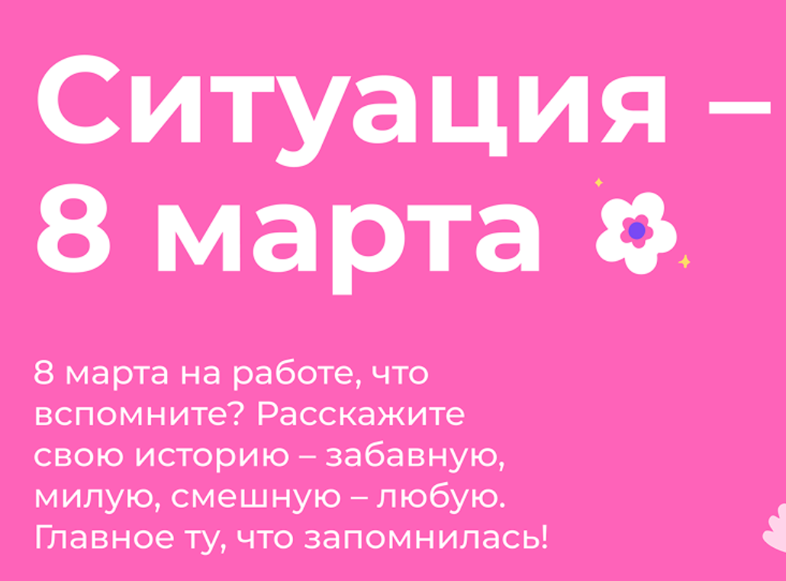
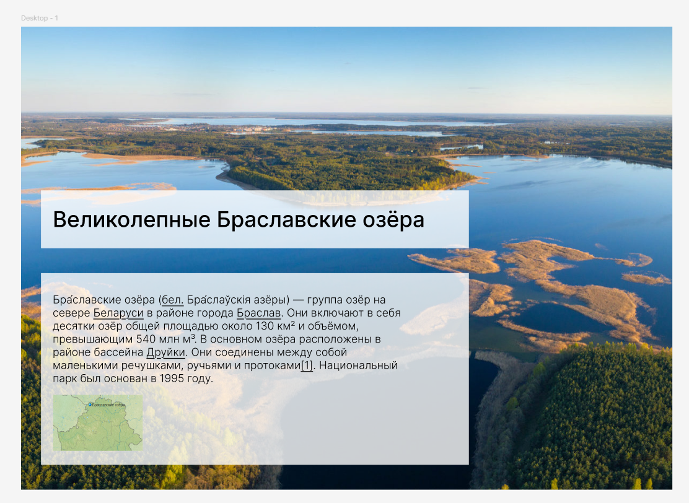
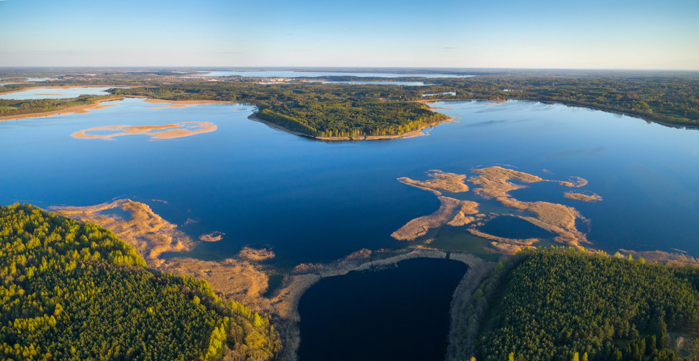
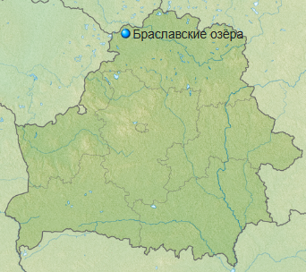

Задания figma
Повторить композиции
Композиция 1

Вот знак тире: –
Цветочек справа и ёлку снизу - не надо добавлять.
Композиция 2

Картинки:


Текст:
Бра́славские озёра (бел. Бра́слаўскія азёры) — группа озёр на севере Беларуси в районе города Браслав. Они включают в себя десятки озёр общей площадью около 130 км² и объёмом, превышающим 540 млн м³. В основном озёра расположены в районе бассейна Друйки. Они соединены между собой маленькими речушками, ручьями и протоками[1]. Национальный парк был основан в 1995 году.
Композиция 3

Надо сделать форматирование, т.е. навести красоту: выровнять слова в ячейках, сделать жирным шрифтом и т.д.